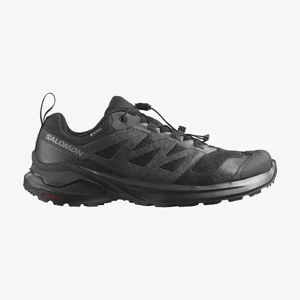
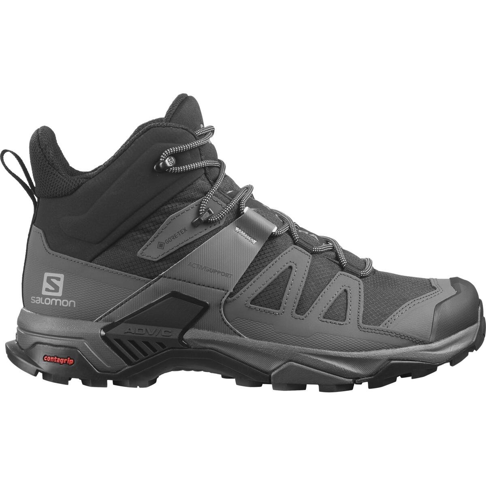

Популярні моделі

Кросівки
НОВІ чоловічі кросівки Salewa MS Dropline - cтворені для динамічних походів по пересічній місцевості. Верх виготовлений із еластичного “дихаючого” матеріалу - це допомагає забезпечити сухість ніг під час походу.
Докладніше

Черевики
НОВІ CROSSHIKE призначені для використання у будь-яких умовах, у будь-якій точці світу. Їх відрізняє різноспрямований протектор, безшовна, повністю закрита сітчаста конструкція та водонепроникна мембрана GORE-TEX. Взуття забезпечує не тільки маневреність, а й гарне зчеплення із поверхнею. Профіль середньої висоти амортизує гомілковостоп і дозволяє дотримуватися маршруту в будь-якій пригоді.
Докладніше